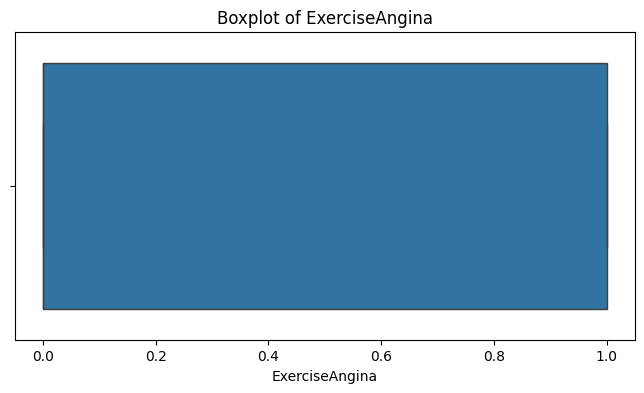

import sqlite3
import csv
csv_file_path = 'heart.csv'
db_file_path = 'heart.db'
conn = sqlite3.connect(db_file_path)
cursor = conn.cursor()
# Drop tables if they exist
cursor.execute("DROP TABLE IF EXISTS patients;")
cursor.execute("DROP TABLE IF EXISTS measurements;")
cursor.execute("DROP TABLE IF EXISTS diagnosis;")
# Create normalized tables
cursor.execute("""
CREATE TABLE patients (
patient_id INTEGER PRIMARY KEY,
age INTEGER,
sex TEXT
);
""")
cursor.execute("""
CREATE TABLE measurements (
meas_id INTEGER PRIMARY KEY AUTOINCREMENT,
patient_id INTEGER,
trestbps INTEGER,
chol INTEGER,
fbs INTEGER,
restecg INTEGER,
thalach INTEGER,
exang INTEGER,
oldpeak REAL,
slope INTEGER,
ca INTEGER,
thal INTEGER,
FOREIGN KEY(patient_id) REFERENCES patients(patient_id)
);
""")
cursor.execute("""
CREATE TABLE diagnosis (
diag_id INTEGER PRIMARY KEY AUTOINCREMENT,
patient_id INTEGER,
cp_type INTEGER,
target INTEGER,
FOREIGN KEY(patient_id) REFERENCES patients(patient_id)
);
""")
with open(csv_file_path, 'r', newline='', encoding='utf-8') as csvfile:
reader = csv.reader(csvfile)
header = next(reader) # Read header row
# Print the header to see what columns are available
print("CSV Header:", header)
# Based on a typical heart dataset, you might have columns like:
# age,sex,cp,trestbps,chol,fbs,restecg,thalach,exang,oldpeak,slope,ca,thal,target
# Adjust column indices accordingly:
age_idx = header.index("age")
sex_idx = header.index("sex")
cp_idx = header.index("cp")
trestbps_idx = header.index("trestbps")
chol_idx = header.index("chol")
fbs_idx = header.index("fbs")
restecg_idx = header.index("restecg")
thalach_idx = header.index("thalach")
exang_idx = header.index("exang")
oldpeak_idx = header.index("oldpeak")
slope_idx = header.index("slope")
ca_idx = header.index("ca")
thal_idx = header.index("thal")
target_idx = header.index("target")
row_number = 1 # We'll use this to generate a surrogate patient_id
for row in reader:
patient_id_val = row_number
age_val = int(row[age_idx])
sex_val = row[sex_idx]
cp_val = int(row[cp_idx])
trestbps_val = int(row[trestbps_idx])
chol_val = int(row[chol_idx])
fbs_val = int(row[fbs_idx])
restecg_val = int(row[restecg_idx])
thalach_val = int(row[thalach_idx])
exang_val = int(row[exang_idx])
oldpeak_val = float(row[oldpeak_idx])
slope_val = int(row[slope_idx])
ca_val = int(row[ca_idx])
thal_val = int(row[thal_idx])
target_val = int(row[target_idx])
# Insert into patients table
cursor.execute("""
INSERT INTO patients (patient_id, age, sex)
VALUES (?, ?, ?)
""", (patient_id_val, age_val, sex_val))
# Insert into measurements table
cursor.execute("""
INSERT INTO measurements (
patient_id, trestbps, chol, fbs, restecg, thalach, exang, oldpeak, slope, ca, thal
) VALUES (?, ?, ?, ?, ?, ?, ?, ?, ?, ?, ?)
""", (patient_id_val, trestbps_val, chol_val, fbs_val, restecg_val, thalach_val, exang_val, oldpeak_val, slope_val, ca_val, thal_val))
# Insert into diagnosis table
cursor.execute("""
INSERT INTO diagnosis (patient_id, cp_type, target)
VALUES (?, ?, ?)
""", (patient_id_val, cp_val, target_val))
row_number += 1
conn.commit()
conn.close()
print("Database created and populated successfully.")
---------------------------------------------------------------------------
FileNotFoundError Traceback (most recent call last)
Cell In[1], line 52
24 cursor.execute("""
25 CREATE TABLE measurements (
26 meas_id INTEGER PRIMARY KEY AUTOINCREMENT,
(...)
39 );
40 """)
42 cursor.execute("""
43 CREATE TABLE diagnosis (
44 diag_id INTEGER PRIMARY KEY AUTOINCREMENT,
(...)
49 );
50 """)
---> 52 with open(csv_file_path, 'r', newline='', encoding='utf-8') as csvfile:
53 reader = csv.reader(csvfile)
54 header = next(reader) # Read header row
File /Library/Frameworks/Python.framework/Versions/3.13/lib/python3.13/site-packages/IPython/core/interactiveshell.py:324, in _modified_open(file, *args, **kwargs)
317 if file in {0, 1, 2}:
318 raise ValueError(
319 f"IPython won't let you open fd={file} by default "
320 "as it is likely to crash IPython. If you know what you are doing, "
321 "you can use builtins' open."
322 )
--> 324 return io_open(file, *args, **kwargs)
FileNotFoundError: [Errno 2] No such file or directory: 'heart.csv'
import sqlite3
import pandas as pd
# Connect to the SQLite database
db_file_path = 'heart.db' # Path to the SQLite database
conn = sqlite3.connect(db_file_path)
# SQL query to join tables and reconstruct the data
query = """
SELECT
patients.patient_id,
patients.age,
patients.sex,
measurements.trestbps,
measurements.chol,
measurements.fbs,
measurements.restecg,
measurements.thalach,
measurements.exang,
measurements.oldpeak,
measurements.slope,
measurements.ca,
measurements.thal,
diagnosis.cp_type,
diagnosis.target
FROM
patients
JOIN
measurements ON patients.patient_id = measurements.patient_id
JOIN
diagnosis ON patients.patient_id = diagnosis.patient_id;
"""
# Execute the query and load the data into a Pandas DataFrame
df = pd.read_sql_query(query, conn)
# Close the database connection
conn.close()
# Display the first few rows of the DataFrame
print(df.head())
patient_id age sex trestbps chol fbs restecg thalach exang oldpeak \
0 1 52 1 125 212 0 1 168 0 1.0
1 2 53 1 140 203 1 0 155 1 3.1
2 3 70 1 145 174 0 1 125 1 2.6
3 4 61 1 148 203 0 1 161 0 0.0
4 5 62 0 138 294 1 1 106 0 1.9
slope ca thal cp_type target
0 2 2 3 0 0
1 0 0 3 0 0
2 0 0 3 0 0
3 2 1 3 0 0
4 1 3 2 0 0
import mlflow
import os
# Step 1: Set the tracking URI
mlflow.set_tracking_uri("https://dagshub.com/Sudeepthi-Rongali/my-first-repo.mlflow")
# Step 2: Set your DagsHub access token in the environment variables
os.environ["MLFLOW_TRACKING_USERNAME"] = "Sudeepthi-Rongali"
os.environ["MLFLOW_TRACKING_PASSWORD"] = "b8cf8553047a54065934eb49226ab0205416e911"
# Step 3: Create or set the experiment
experiment_name = "Heart Disease Prediction Experiments"
# Check if the experiment exists; otherwise, create it
experiment = mlflow.get_experiment_by_name(experiment_name)
if experiment is None:
print(f"Experiment '{experiment_name}' not found. Creating a new experiment...")
mlflow.create_experiment(experiment_name)
mlflow.set_experiment(experiment_name)
# Step 4: Log a test experiment to verify connectivity
with mlflow.start_run(run_name="Test_Run"):
mlflow.log_param("model", "Random Forest Classifier")
mlflow.log_param("max_depth", 10)
mlflow.log_metric("accuracy", 0.92)
mlflow.log_metric("f1_score", 0.89)
mlflow.set_tag("project", "Heart Disease Prediction")
print(f"MLflow tracking URI: {mlflow.get_tracking_uri()}")
print(f"Experiment '{experiment_name}' is ready for logging.")
üèÉ View run Test_Run at: https://dagshub.com/Sudeepthi-Rongali/my-first-repo.mlflow/#/experiments/0/runs/8821e15c2116406b9a923dc6316c4268
üß™ View experiment at: https://dagshub.com/Sudeepthi-Rongali/my-first-repo.mlflow/#/experiments/0
MLflow tracking URI: https://dagshub.com/Sudeepthi-Rongali/my-first-repo.mlflow
Experiment 'Heart Disease Prediction Experiments' is ready for logging.
import mlflow
# Start an MLflow run
with mlflow.start_run(run_name="Data Preprocessing"):
# Step 1: Rename columns for better clarity
df.rename(
columns={
'age': 'Age',
'sex': 'Sex',
'trestbps': 'RestingBP',
'chol': 'Cholesterol',
'fbs': 'FastingBS',
'restecg': 'RestingECG',
'thalach': 'MaxHR',
'exang': 'ExerciseAngina',
'oldpeak': 'OldPeak',
'slope': 'ST_Slope',
'ca': 'MajorVessels',
'thal': 'Thalassemia',
'cp_type': 'ChestPainType',
'target': 'Target'
},
inplace=True
)
print("Columns renamed successfully.")
mlflow.log_param("Columns Renamed", "True")
# Step 2: Check for missing values
missing_values = df.isnull().sum()
print("Missing values in each column:")
print(missing_values)
mlflow.log_metric("Total Missing Values", missing_values.sum())
# Step 3: Ensure data types are consistent and correct
print("\nData types before correction:")
print(df.dtypes)
mlflow.log_param("Data Types Before Correction", str(df.dtypes.to_dict()))
# Example: Convert columns to appropriate types (if needed)
df['Sex'] = df['Sex'].astype(int)
df['FastingBS'] = df['FastingBS'].astype(int)
df['ChestPainType'] = df['ChestPainType'].astype(int)
df['Target'] = df['Target'].astype(int)
print("\nData types after correction:")
print(df.dtypes)
mlflow.log_param("Data Types After Correction", str(df.dtypes.to_dict()))
# Display the cleaned DataFrame
print("\nCleaned DataFrame:")
print(df.head())
# Log the cleaned DataFrame as an artifact
cleaned_data_path = "cleaned_heart_disease.csv"
df.to_csv(cleaned_data_path, index=False)
mlflow.log_artifact(cleaned_data_path)
print(f"\nCleaned DataFrame saved as {cleaned_data_path} and logged to DagsHub.")
Columns renamed successfully.
Missing values in each column:
patient_id 0
Age 0
Sex 0
RestingBP 0
Cholesterol 0
FastingBS 0
RestingECG 0
MaxHR 0
ExerciseAngina 0
OldPeak 0
ST_Slope 0
MajorVessels 0
Thalassemia 0
ChestPainType 0
Target 0
dtype: int64
Data types before correction:
patient_id int64
Age int64
Sex object
RestingBP int64
Cholesterol int64
FastingBS int64
RestingECG int64
MaxHR int64
ExerciseAngina int64
OldPeak float64
ST_Slope int64
MajorVessels int64
Thalassemia int64
ChestPainType int64
Target int64
dtype: object
Data types after correction:
patient_id int64
Age int64
Sex int64
RestingBP int64
Cholesterol int64
FastingBS int64
RestingECG int64
MaxHR int64
ExerciseAngina int64
OldPeak float64
ST_Slope int64
MajorVessels int64
Thalassemia int64
ChestPainType int64
Target int64
dtype: object
Cleaned DataFrame:
patient_id Age Sex RestingBP Cholesterol FastingBS RestingECG MaxHR \
0 1 52 1 125 212 0 1 168
1 2 53 1 140 203 1 0 155
2 3 70 1 145 174 0 1 125
3 4 61 1 148 203 0 1 161
4 5 62 0 138 294 1 1 106
ExerciseAngina OldPeak ST_Slope MajorVessels Thalassemia \
0 0 1.0 2 2 3
1 1 3.1 0 0 3
2 1 2.6 0 0 3
3 0 0.0 2 1 3
4 0 1.9 1 3 2
ChestPainType Target
0 0 0
1 0 0
2 0 0
3 0 0
4 0 0
Cleaned DataFrame saved as cleaned_heart_disease.csv and logged to DagsHub.
üèÉ View run Data Preprocessing at: https://dagshub.com/Sudeepthi-Rongali/my-first-repo.mlflow/#/experiments/0/runs/79330e9cbc73441482957d24d53a6d82
üß™ View experiment at: https://dagshub.com/Sudeepthi-Rongali/my-first-repo.mlflow/#/experiments/0
import matplotlib.pyplot as plt
import seaborn as sns
import mlflow
# Start an MLflow run
with mlflow.start_run(run_name="EDA and Visualization"):
# Descriptive statistics
print("Summary statistics:")
summary_stats = df.describe()
print(summary_stats)
# Log descriptive statistics as a CSV artifact
summary_stats_path = "summary_statistics.csv"
summary_stats.to_csv(summary_stats_path)
mlflow.log_artifact(summary_stats_path)
# Count the distribution of the target variable
print("\nTarget variable distribution:")
target_distribution = df['Target'].value_counts()
print(target_distribution)
# Log target variable distribution as a parameter
mlflow.log_param("Target Distribution", target_distribution.to_dict())
# Visualizing the distribution of numerical variables
numerical_columns = ['Age', 'RestingBP', 'Cholesterol', 'MaxHR', 'OldPeak']
# Plot histograms for numerical columns
for column in numerical_columns:
plt.figure(figsize=(8, 4))
sns.histplot(df[column], kde=True, bins=30, color="blue")
plt.title(f"Distribution of {column}")
plt.xlabel(column)
plt.ylabel("Frequency")
# Save the plot and log it as an artifact
plot_path = f"{column}_distribution.png"
plt.savefig(plot_path)
plt.show()
mlflow.log_artifact(plot_path)
print("\nEDA and visualizations logged to DagsHub successfully!")
Summary statistics:
patient_id Age Sex RestingBP Cholesterol \
count 1025.000000 1025.000000 1025.000000 1025.000000 1025.00000
mean 513.000000 54.434146 0.695610 131.611707 246.00000
std 296.036315 9.072290 0.460373 17.516718 51.59251
min 1.000000 29.000000 0.000000 94.000000 126.00000
25% 257.000000 48.000000 0.000000 120.000000 211.00000
50% 513.000000 56.000000 1.000000 130.000000 240.00000
75% 769.000000 61.000000 1.000000 140.000000 275.00000
max 1025.000000 77.000000 1.000000 200.000000 564.00000
FastingBS RestingECG MaxHR ExerciseAngina OldPeak \
count 1025.000000 1025.000000 1025.000000 1025.000000 1025.000000
mean 0.149268 0.529756 149.114146 0.336585 1.071512
std 0.356527 0.527878 23.005724 0.472772 1.175053
min 0.000000 0.000000 71.000000 0.000000 0.000000
25% 0.000000 0.000000 132.000000 0.000000 0.000000
50% 0.000000 1.000000 152.000000 0.000000 0.800000
75% 0.000000 1.000000 166.000000 1.000000 1.800000
max 1.000000 2.000000 202.000000 1.000000 6.200000
ST_Slope MajorVessels Thalassemia ChestPainType Target
count 1025.000000 1025.000000 1025.000000 1025.000000 1025.000000
mean 1.385366 0.754146 2.323902 0.942439 0.513171
std 0.617755 1.030798 0.620660 1.029641 0.500070
min 0.000000 0.000000 0.000000 0.000000 0.000000
25% 1.000000 0.000000 2.000000 0.000000 0.000000
50% 1.000000 0.000000 2.000000 1.000000 1.000000
75% 2.000000 1.000000 3.000000 2.000000 1.000000
max 2.000000 4.000000 3.000000 3.000000 1.000000
Target variable distribution:
Target
1 526
0 499
Name: count, dtype: int64
EDA and visualizations logged to DagsHub successfully!
üèÉ View run EDA and Visualization at: https://dagshub.com/Sudeepthi-Rongali/my-first-repo.mlflow/#/experiments/0/runs/342885e62907420a8ffa177f73646b40
üß™ View experiment at: https://dagshub.com/Sudeepthi-Rongali/my-first-repo.mlflow/#/experiments/0
import matplotlib.pyplot as plt
import seaborn as sns
import mlflow
# Start an MLflow run
with mlflow.start_run(run_name="Correlation and Visualizations"):
# Heatmap to show correlations
plt.figure(figsize=(12, 8))
correlation_matrix = df.corr()
sns.heatmap(correlation_matrix, annot=True, fmt=".2f", cmap="coolwarm", cbar=True)
plt.title("Correlation Matrix")
# Save and show heatmap
heatmap_path = "correlation_matrix.png"
plt.savefig(heatmap_path)
plt.show()
mlflow.log_artifact(heatmap_path)
# Scatter plot: Age vs MaxHR
plt.figure(figsize=(8, 5))
sns.scatterplot(data=df, x='Age', y='MaxHR', hue='Target', palette='coolwarm')
plt.title("Age vs MaxHR (Colored by Target)")
plt.xlabel("Age")
plt.ylabel("MaxHR")
plt.legend(title='Target')
# Save and show scatter plot
scatterplot_path = "age_vs_maxhr.png"
plt.savefig(scatterplot_path)
plt.show()
mlflow.log_artifact(scatterplot_path)
# Boxplot: ChestPainType vs Target
plt.figure(figsize=(8, 5))
sns.boxplot(data=df, x='ChestPainType', y='OldPeak', hue='Target', palette='Set2')
plt.title("Chest Pain Type vs OldPeak (Colored by Target)")
plt.xlabel("Chest Pain Type")
plt.ylabel("OldPeak")
plt.legend(title='Target')
# Save and show boxplot
boxplot_path = "chestpain_vs_oldpeak.png"
plt.savefig(boxplot_path)
plt.show()
mlflow.log_artifact(boxplot_path)
print("\nCorrelation and visualizations logged to DagsHub successfully!")

Correlation and visualizations logged to DagsHub successfully!
üèÉ View run Correlation and Visualizations at: https://dagshub.com/Sudeepthi-Rongali/my-first-repo.mlflow/#/experiments/0/runs/6a1e5a7e2ddb44c68f287cafc8f92ac0
üß™ View experiment at: https://dagshub.com/Sudeepthi-Rongali/my-first-repo.mlflow/#/experiments/0
from sklearn.model_selection import train_test_split
import mlflow
# Start an MLflow run
with mlflow.start_run(run_name="Train-Test Split"):
# Check the distribution of the target variable
print("Distribution of Target in the entire dataset:")
target_distribution = df['Target'].value_counts(normalize=True)
print(target_distribution)
mlflow.log_param("Overall Target Distribution", target_distribution.to_dict())
# Perform stratified train/test split to maintain class balance
X = df.drop(columns=['Target', 'patient_id']) # Exclude the target and patient ID
y = df['Target']
X_train, X_test, y_train, y_test = train_test_split(
X, y, test_size=0.2, stratify=y, random_state=42
)
# Verify the class distribution in the train and test splits
train_distribution = y_train.value_counts(normalize=True)
test_distribution = y_test.value_counts(normalize=True)
print("\nDistribution of Target in the training set:")
print(train_distribution)
mlflow.log_param("Train Target Distribution", train_distribution.to_dict())
print("\nDistribution of Target in the test set:")
print(test_distribution)
mlflow.log_param("Test Target Distribution", test_distribution.to_dict())
# Save the train and test splits as artifacts
X_train.to_csv("X_train.csv", index=False)
X_test.to_csv("X_test.csv", index=False)
y_train.to_csv("y_train.csv", index=False)
y_test.to_csv("y_test.csv", index=False)
mlflow.log_artifact("X_train.csv")
mlflow.log_artifact("X_test.csv")
mlflow.log_artifact("y_train.csv")
mlflow.log_artifact("y_test.csv")
print("\nTrain-test split logged to DagsHub successfully!")
Distribution of Target in the entire dataset:
Target
1 0.513171
0 0.486829
Name: proportion, dtype: float64
Distribution of Target in the training set:
Target
1 0.513415
0 0.486585
Name: proportion, dtype: float64
Distribution of Target in the test set:
Target
1 0.512195
0 0.487805
Name: proportion, dtype: float64
Train-test split logged to DagsHub successfully!
üèÉ View run Train-Test Split at: https://dagshub.com/Sudeepthi-Rongali/my-first-repo.mlflow/#/experiments/0/runs/7352229dbae24a85b735fd4e479a2528
üß™ View experiment at: https://dagshub.com/Sudeepthi-Rongali/my-first-repo.mlflow/#/experiments/0
import matplotlib.pyplot as plt
import seaborn as sns
import mlflow
# Start an MLflow run
with mlflow.start_run(run_name="Feature Analysis and Missing Values"):
# Re-analyze the correlation matrix to focus on feature relationships with Target
plt.figure(figsize=(12, 8))
feature_target_correlation = correlation_matrix[['Target']].sort_values(by='Target', ascending=False)
sns.heatmap(feature_target_correlation, annot=True, cmap="coolwarm", cbar=True)
plt.title("Correlation of Features with Target")
# Save and show heatmap
heatmap_path = "feature_target_correlation.png"
plt.savefig(heatmap_path)
plt.show()
mlflow.log_artifact(heatmap_path)
# Analyze distributions of numerical features for capped values and outliers
for column in X_train.columns:
plt.figure(figsize=(8, 4))
sns.boxplot(x=X_train[column])
plt.title(f"Boxplot of {column}")
plt.xlabel(column)
# Save and show boxplot
boxplot_path = f"{column}_boxplot.png"
plt.savefig(boxplot_path)
plt.show()
mlflow.log_artifact(boxplot_path)
# Check for missing values
missing_values_train = X_train.isnull().sum()
missing_values_test = X_test.isnull().sum()
print("\nMissing values in training data:")
train_missing_summary = missing_values_train[missing_values_train > 0]
print(train_missing_summary)
mlflow.log_param("Missing Values in Training Data", train_missing_summary.to_dict())
print("\nMissing values in testing data:")
test_missing_summary = missing_values_test[missing_values_test > 0]
print(test_missing_summary)
mlflow.log_param("Missing Values in Testing Data", test_missing_summary.to_dict())
print("\nFeature analysis and missing value checks logged to DagsHub successfully!")

Missing values in training data:
Series([], dtype: int64)
Missing values in testing data:
Series([], dtype: int64)
Feature analysis and missing value checks logged to DagsHub successfully!
üèÉ View run Feature Analysis and Missing Values at: https://dagshub.com/Sudeepthi-Rongali/my-first-repo.mlflow/#/experiments/0/runs/3a660aabe9144b6faa3aa7e47a35cc54
üß™ View experiment at: https://dagshub.com/Sudeepthi-Rongali/my-first-repo.mlflow/#/experiments/0
from sklearn.pipeline import Pipeline
from sklearn.compose import ColumnTransformer
from sklearn.preprocessing import StandardScaler, OneHotEncoder
from sklearn.linear_model import LogisticRegression
from sklearn.model_selection import cross_val_score
import numpy as np
import mlflow
# Start an MLflow run
with mlflow.start_run(run_name="Logistic Regression Model with Cross-Validation"):
# 1. Cap outliers in RestingBP and Cholesterol
def cap_outliers(column, lower_percentile=1, upper_percentile=99):
lower_bound = np.percentile(column, lower_percentile)
upper_bound = np.percentile(column, upper_percentile)
return np.clip(column, lower_bound, upper_bound)
X_train['RestingBP'] = cap_outliers(X_train['RestingBP'])
X_train['Cholesterol'] = cap_outliers(X_train['Cholesterol'])
X_test['RestingBP'] = cap_outliers(X_test['RestingBP'])
X_test['Cholesterol'] = cap_outliers(X_test['Cholesterol'])
# Log the capping process
mlflow.log_param("Outliers Capped for RestingBP and Cholesterol", "True")
# 2. Preprocessing pipeline
# Identify numerical and categorical columns
numerical_features = ['Age', 'RestingBP', 'Cholesterol', 'MaxHR', 'OldPeak']
categorical_features = ['Sex', 'ChestPainType', 'FastingBS', 'RestingECG', 'ExerciseAngina', 'ST_Slope']
# Preprocessing steps
numerical_transformer = StandardScaler()
categorical_transformer = OneHotEncoder(handle_unknown='ignore')
preprocessor = ColumnTransformer(
transformers=[
('num', numerical_transformer, numerical_features),
('cat', categorical_transformer, categorical_features)
]
)
# 3. Create pipeline
pipeline = Pipeline(steps=[
('preprocessor', preprocessor),
('classifier', LogisticRegression(random_state=42, max_iter=1000))
])
# 4. Cross-validation
cv_scores = cross_val_score(pipeline, X_train, y_train, cv=3, scoring='f1')
# Log cross-validation results
print("Cross-validation F1-scores:")
print(cv_scores)
print(f"Mean F1-score: {cv_scores.mean():.4f}")
print(f"Standard Deviation: {cv_scores.std():.4f}")
mlflow.log_metric("Mean F1-score", cv_scores.mean())
mlflow.log_metric("F1-score Std Dev", cv_scores.std())
mlflow.log_param("Cross-validation F1-scores", cv_scores.tolist())
print("Cross-validation results logged to DagsHub successfully!")
Cross-validation F1-scores:
[0.84587814 0.83448276 0.78200692]
Mean F1-score: 0.8208
Standard Deviation: 0.0278
Cross-validation results logged to DagsHub successfully!
üèÉ View run Logistic Regression Model with Cross-Validation at: https://dagshub.com/Sudeepthi-Rongali/my-first-repo.mlflow/#/experiments/0/runs/41409c70a5ec44de930956f7f7709b82
üß™ View experiment at: https://dagshub.com/Sudeepthi-Rongali/my-first-repo.mlflow/#/experiments/0
from sklearn.ensemble import RandomForestClassifier
from sklearn.linear_model import RidgeClassifier
import mlflow
# Start an MLflow run
with mlflow.start_run(run_name="Model Comparison Experiment"):
# Define models for comparison
models = {
'LogisticRegression': LogisticRegression(random_state=42, max_iter=1000),
'RidgeClassifier': RidgeClassifier(random_state=42),
'RandomForestClassifier': RandomForestClassifier(random_state=42, n_estimators=100)
}
# Dictionary to store results
results = {}
# Iterate over models and perform cross-validation
for model_name, model in models.items():
print(f"\nTraining {model_name}...")
pipeline = Pipeline(steps=[
('preprocessor', preprocessor),
('classifier', model)
])
cv_scores = cross_val_score(pipeline, X_train, y_train, cv=3, scoring='f1')
results[model_name] = {
'mean_f1': cv_scores.mean(),
'std_f1': cv_scores.std(),
'cv_scores': cv_scores
}
# Log results for each model
mlflow.log_metric(f"{model_name}_Mean_F1", cv_scores.mean())
mlflow.log_metric(f"{model_name}_Std_F1", cv_scores.std())
mlflow.log_param(f"{model_name}_CV_Scores", cv_scores.tolist())
print(f"Cross-validation F1-scores: {cv_scores}")
print(f"Mean F1-score: {cv_scores.mean():.4f}")
print(f"Standard Deviation: {cv_scores.std():.4f}")
# Display the results
print("\nSummary of Experiment #2 Results:")
for model_name, result in results.items():
print(f"{model_name}: Mean F1 = {result['mean_f1']:.4f}, Std Dev = {result['std_f1']:.4f}")
mlflow.log_param(f"{model_name}_Summary", {
"Mean F1": result['mean_f1'],
"Std Dev F1": result['std_f1']
})
print("\nModel comparison results logged to DagsHub successfully!")
Training LogisticRegression...
Cross-validation F1-scores: [0.84587814 0.83448276 0.78200692]
Mean F1-score: 0.8208
Standard Deviation: 0.0278
Training RidgeClassifier...
Cross-validation F1-scores: [0.85211268 0.84137931 0.77241379]
Mean F1-score: 0.8220
Standard Deviation: 0.0353
Training RandomForestClassifier...
Cross-validation F1-scores: [0.95890411 0.96402878 0.95438596]
Mean F1-score: 0.9591
Standard Deviation: 0.0039
Summary of Experiment #2 Results:
LogisticRegression: Mean F1 = 0.8208, Std Dev = 0.0278
RidgeClassifier: Mean F1 = 0.8220, Std Dev = 0.0353
RandomForestClassifier: Mean F1 = 0.9591, Std Dev = 0.0039
Model comparison results logged to DagsHub successfully!
üèÉ View run Model Comparison Experiment at: https://dagshub.com/Sudeepthi-Rongali/my-first-repo.mlflow/#/experiments/0/runs/c05c55d4bfbf4eb6abdf58fbf9c4bebe
üß™ View experiment at: https://dagshub.com/Sudeepthi-Rongali/my-first-repo.mlflow/#/experiments/0
import mlflow
# Start an MLflow run
with mlflow.start_run(run_name="Feature Engineering and Logistic Regression"):
# 1. Create new engineered features
X_train = X_train.copy() # Avoid modifying the original data
X_test = X_test.copy()
# Calculate new features
X_train['HeartRateReserve'] = 220 - X_train['Age'] - X_train['MaxHR']
X_test['HeartRateReserve'] = 220 - X_test['Age'] - X_test['MaxHR']
X_train['CholesterolToAgeRatio'] = X_train['Cholesterol'] / X_train['Age']
X_test['CholesterolToAgeRatio'] = X_test['Cholesterol'] / X_test['Age']
X_train['ExerciseImpactIndex'] = X_train['OldPeak'] * X_train['ST_Slope']
X_test['ExerciseImpactIndex'] = X_test['OldPeak'] * X_test['ST_Slope']
# Log new features created
mlflow.log_param("New Features", [
"HeartRateReserve",
"CholesterolToAgeRatio",
"ExerciseImpactIndex"
])
print("\nNew features engineered and added to datasets.")
# Add new features to the numerical features list
numerical_features.extend(['HeartRateReserve', 'CholesterolToAgeRatio', 'ExerciseImpactIndex'])
# 2. Recreate the preprocessing pipeline to include new features
preprocessor = ColumnTransformer(
transformers=[
('num', numerical_transformer, numerical_features),
('cat', categorical_transformer, categorical_features)
]
)
# 3. Test Logistic Regression with new features
pipeline = Pipeline(steps=[
('preprocessor', preprocessor),
('classifier', LogisticRegression(random_state=42, max_iter=1000))
])
# Perform cross-validation
cv_scores = cross_val_score(pipeline, X_train, y_train, cv=3, scoring='f1')
# Log cross-validation results
print("\nCross-validation F1-scores with new features:")
print(cv_scores)
print(f"Mean F1-score: {cv_scores.mean():.4f}")
print(f"Standard Deviation: {cv_scores.std():.4f}")
mlflow.log_metric("Mean F1-score with New Features", cv_scores.mean())
mlflow.log_metric("F1-score Std Dev with New Features", cv_scores.std())
mlflow.log_param("Cross-validation F1-scores with New Features", cv_scores.tolist())
print("\nFeature engineering and logistic regression results logged to DagsHub successfully!")
New features engineered and added to datasets.
Cross-validation F1-scores with new features:
[0.84697509 0.83448276 0.79037801]
Mean F1-score: 0.8239
Standard Deviation: 0.0243
Feature engineering and logistic regression results logged to DagsHub successfully!
üèÉ View run Feature Engineering and Logistic Regression at: https://dagshub.com/Sudeepthi-Rongali/my-first-repo.mlflow/#/experiments/0/runs/a13dd1d3e540441a8eecc0acd500e589
üß™ View experiment at: https://dagshub.com/Sudeepthi-Rongali/my-first-repo.mlflow/#/experiments/0
from sklearn.feature_selection import VarianceThreshold
from sklearn.ensemble import RandomForestClassifier
import numpy as np
import mlflow
# Start an MLflow run
with mlflow.start_run(run_name="Feature Selection"):
# 1. Correlation Threshold
# Compute the correlation matrix
correlation_matrix = X_train.corr()
correlation_threshold = 0.9 # Threshold for high correlation
correlated_features = set()
for i in range(len(correlation_matrix.columns)):
for j in range(i):
if abs(correlation_matrix.iloc[i, j]) > correlation_threshold:
correlated_features.add(correlation_matrix.columns[i])
print("\nFeatures removed due to high correlation:")
print(correlated_features)
mlflow.log_param("Features Removed Due to High Correlation", list(correlated_features))
X_train_corr = X_train.drop(columns=correlated_features)
X_test_corr = X_test.drop(columns=correlated_features)
# 2. Feature Importance (Random Forest)
rf = RandomForestClassifier(random_state=42)
rf.fit(X_train, y_train)
importances = rf.feature_importances_
importance_threshold = 0.01 # Features below this threshold will be removed
important_features = [feature for feature, importance in zip(X_train.columns, importances) if importance > importance_threshold]
print("\nFeatures selected based on importance threshold:")
print(important_features)
mlflow.log_param("Features Selected by Importance", important_features)
X_train_importance = X_train[important_features]
X_test_importance = X_test[important_features]
# 3. Variance Threshold
# Remove low-variance features
variance_threshold = 0.01 # Minimum variance required to keep the feature
selector = VarianceThreshold(threshold=variance_threshold)
selector.fit(X_train)
selected_features = X_train.columns[selector.get_support()]
print("\nFeatures selected based on variance threshold:")
print(selected_features.tolist())
mlflow.log_param("Features Selected by Variance Threshold", selected_features.tolist())
X_train_variance = X_train[selected_features]
X_test_variance = X_test[selected_features]
# Summary of selected features from all methods
print("\nSummary of selected features:")
print("Correlation Threshold:", X_train_corr.columns.tolist())
print("Feature Importance:", X_train_importance.columns.tolist())
print("Variance Threshold:", X_train_variance.columns.tolist())
mlflow.log_param("Correlation Threshold Features", X_train_corr.columns.tolist())
mlflow.log_param("Feature Importance Features", X_train_importance.columns.tolist())
mlflow.log_param("Variance Threshold Features", X_train_variance.columns.tolist())
print("\nFeature selection process logged to DagsHub successfully!")
Features removed due to high correlation:
{'HeartRateReserve'}
Features selected based on importance threshold:
['Age', 'Sex', 'RestingBP', 'Cholesterol', 'RestingECG', 'MaxHR', 'ExerciseAngina', 'OldPeak', 'ST_Slope', 'MajorVessels', 'Thalassemia', 'ChestPainType', 'HeartRateReserve', 'CholesterolToAgeRatio', 'ExerciseImpactIndex']
Features selected based on variance threshold:
['Age', 'Sex', 'RestingBP', 'Cholesterol', 'FastingBS', 'RestingECG', 'MaxHR', 'ExerciseAngina', 'OldPeak', 'ST_Slope', 'MajorVessels', 'Thalassemia', 'ChestPainType', 'HeartRateReserve', 'CholesterolToAgeRatio', 'ExerciseImpactIndex']
Summary of selected features:
Correlation Threshold: ['Age', 'Sex', 'RestingBP', 'Cholesterol', 'FastingBS', 'RestingECG', 'MaxHR', 'ExerciseAngina', 'OldPeak', 'ST_Slope', 'MajorVessels', 'Thalassemia', 'ChestPainType', 'CholesterolToAgeRatio', 'ExerciseImpactIndex']
Feature Importance: ['Age', 'Sex', 'RestingBP', 'Cholesterol', 'RestingECG', 'MaxHR', 'ExerciseAngina', 'OldPeak', 'ST_Slope', 'MajorVessels', 'Thalassemia', 'ChestPainType', 'HeartRateReserve', 'CholesterolToAgeRatio', 'ExerciseImpactIndex']
Variance Threshold: ['Age', 'Sex', 'RestingBP', 'Cholesterol', 'FastingBS', 'RestingECG', 'MaxHR', 'ExerciseAngina', 'OldPeak', 'ST_Slope', 'MajorVessels', 'Thalassemia', 'ChestPainType', 'HeartRateReserve', 'CholesterolToAgeRatio', 'ExerciseImpactIndex']
Feature selection process logged to DagsHub successfully!
üèÉ View run Feature Selection at: https://dagshub.com/Sudeepthi-Rongali/my-first-repo.mlflow/#/experiments/0/runs/658cb7377d5e4012bd3c3c692b6ec010
üß™ View experiment at: https://dagshub.com/Sudeepthi-Rongali/my-first-repo.mlflow/#/experiments/0
from sklearn.pipeline import Pipeline
from sklearn.compose import ColumnTransformer
from sklearn.preprocessing import StandardScaler, OneHotEncoder
from sklearn.linear_model import LogisticRegression
from sklearn.ensemble import RandomForestClassifier
from sklearn.model_selection import cross_val_score
import mlflow
# Start an MLflow run
with mlflow.start_run(run_name="Model Evaluation with Selected Features"):
# Use features selected by Feature Importance
selected_features = ['Age', 'Sex', 'RestingBP', 'Cholesterol', 'RestingECG', 'MaxHR',
'ExerciseAngina', 'OldPeak', 'ST_Slope', 'MajorVessels',
'Thalassemia', 'ChestPainType', 'CholesterolToAgeRatio',
'ExerciseImpactIndex']
X_train_selected = X_train[selected_features]
X_test_selected = X_test[selected_features]
# Log selected features
mlflow.log_param("Selected Features", selected_features)
# Preprocessing pipeline for selected features
preprocessor_selected = ColumnTransformer(
transformers=[
('num', numerical_transformer, [col for col in selected_features if col in numerical_features]),
('cat', categorical_transformer, [col for col in selected_features if col in categorical_features])
]
)
# Models for evaluation
models = {
'LogisticRegression': LogisticRegression(random_state=42, max_iter=1000),
'RandomForestClassifier': RandomForestClassifier(random_state=42, n_estimators=100)
}
# Dictionary to store results
results_selected = {}
# Train and evaluate models with selected features
for model_name, model in models.items():
print(f"\nTraining {model_name} with selected features...")
pipeline_selected = Pipeline(steps=[
('preprocessor', preprocessor_selected),
('classifier', model)
])
cv_scores = cross_val_score(pipeline_selected, X_train_selected, y_train, cv=3, scoring='f1')
results_selected[model_name] = {
'mean_f1': cv_scores.mean(),
'std_f1': cv_scores.std(),
'cv_scores': cv_scores
}
# Log results for each model
mlflow.log_metric(f"{model_name}_Mean_F1", cv_scores.mean())
mlflow.log_metric(f"{model_name}_Std_F1", cv_scores.std())
mlflow.log_param(f"{model_name}_CV_Scores", cv_scores.tolist())
print(f"Cross-validation F1-scores: {cv_scores}")
print(f"Mean F1-score: {cv_scores.mean():.4f}")
print(f"Standard Deviation: {cv_scores.std():.4f}")
# Display summary of results
print("\nSummary of Experiment #4 Results with Selected Features:")
for model_name, result in results_selected.items():
print(f"{model_name}: Mean F1 = {result['mean_f1']:.4f}, Std Dev = {result['std_f1']:.4f}")
mlflow.log_param(f"{model_name}_Summary", {
"Mean F1": result['mean_f1'],
"Std Dev F1": result['std_f1']
})
print("\nModel evaluation with selected features logged to DagsHub successfully!")
Training LogisticRegression with selected features...
Cross-validation F1-scores: [0.84697509 0.83044983 0.80139373]
Mean F1-score: 0.8263
Standard Deviation: 0.0188
Training RandomForestClassifier with selected features...
Cross-validation F1-scores: [0.95890411 0.97508897 0.95104895]
Mean F1-score: 0.9617
Standard Deviation: 0.0100
Summary of Experiment #4 Results with Selected Features:
LogisticRegression: Mean F1 = 0.8263, Std Dev = 0.0188
RandomForestClassifier: Mean F1 = 0.9617, Std Dev = 0.0100
Model evaluation with selected features logged to DagsHub successfully!
üèÉ View run Model Evaluation with Selected Features at: https://dagshub.com/Sudeepthi-Rongali/my-first-repo.mlflow/#/experiments/0/runs/a5525b7932cd48079ea5265402bf8c61
üß™ View experiment at: https://dagshub.com/Sudeepthi-Rongali/my-first-repo.mlflow/#/experiments/0
from sklearn.decomposition import PCA
from sklearn.pipeline import Pipeline
from sklearn.linear_model import LogisticRegression
from sklearn.preprocessing import StandardScaler
from sklearn.model_selection import cross_val_score
import matplotlib.pyplot as plt
import numpy as np
import mlflow
# Start an MLflow run
with mlflow.start_run(run_name="PCA and Logistic Regression"):
# Standardize numerical features before PCA
scaler = StandardScaler()
X_train_scaled = scaler.fit_transform(X_train[selected_features])
X_test_scaled = scaler.transform(X_test[selected_features])
# 1. Apply PCA
pca = PCA()
X_train_pca = pca.fit_transform(X_train_scaled)
X_test_pca = pca.transform(X_test_scaled)
# Scree Plot
explained_variance_ratio = pca.explained_variance_ratio_
cumulative_variance = np.cumsum(explained_variance_ratio)
plt.figure(figsize=(8, 6))
plt.plot(range(1, len(cumulative_variance) + 1), cumulative_variance, marker='o', linestyle='--')
plt.title('Scree Plot - Cumulative Explained Variance')
plt.xlabel('Number of Principal Components')
plt.ylabel('Cumulative Explained Variance')
plt.axhline(y=0.95, color='r', linestyle='-') # Threshold at 95% explained variance
plt.axvline(x=np.argmax(cumulative_variance >= 0.95) + 1, color='g', linestyle='--') # Number of components for 95% variance
plt.grid()
scree_plot_path = "scree_plot.png"
plt.savefig(scree_plot_path)
plt.show()
mlflow.log_artifact(scree_plot_path)
# Select the number of components (95% variance threshold)
n_components = np.argmax(cumulative_variance >= 0.95) + 1
print(f"\nNumber of components to retain 95% variance: {n_components}")
# Log the result with a unique key
mlflow.log_param("PCA_95_Variance_Components", n_components)
# Reapply PCA with selected components
pca = PCA(n_components=n_components)
X_train_pca = pca.fit_transform(X_train_scaled)
X_test_pca = pca.transform(X_test_scaled)
# Train Logistic Regression with PCA components
pipeline_pca = Pipeline(steps=[
('classifier', LogisticRegression(random_state=42, max_iter=1000))
])
cv_scores = cross_val_score(pipeline_pca, X_train_pca, y_train, cv=3, scoring='f1')
# Log results
print("\nCross-validation F1-scores with PCA components:")
print(cv_scores)
print(f"Mean F1-score: {cv_scores.mean():.4f}")
print(f"Standard Deviation: {cv_scores.std():.4f}")
# Log metrics and results
mlflow.log_metric("Mean_F1_Score_PCA", cv_scores.mean())
mlflow.log_metric("Std_F1_Score_PCA", cv_scores.std())
mlflow.log_param("PCA_CV_Scores", cv_scores.tolist())
print("\nPCA analysis and logistic regression results logged to DagsHub successfully!")
Number of components to retain 95% variance: 11
Cross-validation F1-scores with PCA components:
[0.86597938 0.86111111 0.82154882]
Mean F1-score: 0.8495
Standard Deviation: 0.0199
PCA analysis and logistic regression results logged to DagsHub successfully!
üèÉ View run PCA and Logistic Regression at: https://dagshub.com/Sudeepthi-Rongali/my-first-repo.mlflow/#/experiments/0/runs/7f022d427d8d4e9f82072cb45dfef80b
üß™ View experiment at: https://dagshub.com/Sudeepthi-Rongali/my-first-repo.mlflow/#/experiments/0
from sklearn.feature_selection import RFE
from sklearn.model_selection import cross_val_score
from sklearn.pipeline import Pipeline
from sklearn.preprocessing import StandardScaler
from sklearn.linear_model import LogisticRegression
import mlflow
# Start an MLflow run
with mlflow.start_run(run_name="RFE Feature Selection and Model Evaluation"):
# Recursive Feature Elimination (RFE)
log_reg = LogisticRegression(random_state=42, max_iter=5000) # Increased max_iter to 5000
rfe = RFE(estimator=log_reg, n_features_to_select=10) # Select top 10 features
# Standardize data before applying RFE
scaler = StandardScaler()
X_train_scaled = scaler.fit_transform(X_train[selected_features])
X_test_scaled = scaler.transform(X_test[selected_features])
# Fit RFE on scaled training data
X_train_rfe = rfe.fit_transform(X_train_scaled, y_train)
X_test_rfe = rfe.transform(X_test_scaled)
# Get selected features from RFE
selected_features_rfe = [feature for feature, rank in zip(selected_features, rfe.ranking_) if rank == 1]
print(f"\nFeatures selected by RFE: {selected_features_rfe}")
mlflow.log_param("RFE Selected Features", selected_features_rfe)
# Evaluate the model with selected features
pipeline_rfe = Pipeline(steps=[
('classifier', LogisticRegression(random_state=42, max_iter=5000)) # Increased max_iter to 5000
])
cv_scores_rfe = cross_val_score(pipeline_rfe, X_train_rfe, y_train, cv=3, scoring='f1')
# Log results
print("\nCross-validation F1-scores with RFE-selected features:")
print(cv_scores_rfe)
print(f"Mean F1-score: {cv_scores_rfe.mean():.4f}")
print(f"Standard Deviation: {cv_scores_rfe.std():.4f}")
mlflow.log_metric("Mean F1-score with RFE", cv_scores_rfe.mean())
mlflow.log_metric("F1-score Std Dev with RFE", cv_scores_rfe.std())
mlflow.log_param("RFE CV Scores", cv_scores_rfe.tolist())
print("\nRFE feature selection and model evaluation results logged to DagsHub successfully!")
Features selected by RFE: ['Sex', 'RestingBP', 'Cholesterol', 'MaxHR', 'ExerciseAngina', 'OldPeak', 'ST_Slope', 'MajorVessels', 'Thalassemia', 'ChestPainType']
Cross-validation F1-scores with RFE-selected features:
[0.86006826 0.86111111 0.82119205]
Mean F1-score: 0.8475
Standard Deviation: 0.0186
RFE feature selection and model evaluation results logged to DagsHub successfully!
üèÉ View run RFE Feature Selection and Model Evaluation at: https://dagshub.com/Sudeepthi-Rongali/my-first-repo.mlflow/#/experiments/0/runs/8fb651b87f2449e485991cf2a5069b62
üß™ View experiment at: https://dagshub.com/Sudeepthi-Rongali/my-first-repo.mlflow/#/experiments/0
from sklearn.ensemble import VotingClassifier
from sklearn.model_selection import cross_val_score
from sklearn.metrics import classification_report
import mlflow
# Start an MLflow run
with mlflow.start_run(run_name="Voting Classifier Evaluation"):
# Define base models
log_reg = LogisticRegression(random_state=42, max_iter=5000)
ridge_clf = RidgeClassifier(random_state=42)
rf_clf = RandomForestClassifier(random_state=42, n_estimators=100)
# Create Voting Classifier
voting_clf = VotingClassifier(
estimators=[
('log_reg', log_reg),
('ridge', ridge_clf),
('rf', rf_clf)
],
voting='hard' # Hard voting
)
# Perform cross-validation
cv_scores_voting = cross_val_score(voting_clf, X_train_rfe, y_train, cv=3, scoring='f1')
# Log cross-validation results
print("\nCross-validation F1-scores with Voting Classifier:")
print(cv_scores_voting)
print(f"Mean F1-score: {cv_scores_voting.mean():.4f}")
print(f"Standard Deviation: {cv_scores_voting.std():.4f}")
mlflow.log_metric("Mean F1-score Voting Classifier", cv_scores_voting.mean())
mlflow.log_metric("F1-score Std Dev Voting Classifier", cv_scores_voting.std())
mlflow.log_param("Voting Classifier CV Scores", cv_scores_voting.tolist())
# Train Voting Classifier on the entire training set
voting_clf.fit(X_train_rfe, y_train)
# Evaluate on the test set
test_predictions = voting_clf.predict(X_test_rfe)
classification_report_str = classification_report(y_test, test_predictions)
# Log classification report
print("\nClassification Report on Test Data:")
print(classification_report_str)
mlflow.log_text(classification_report_str, "classification_report.txt")
print("\nVoting Classifier evaluation results logged to DagsHub successfully!")
Cross-validation F1-scores with Voting Classifier:
[0.86394558 0.87285223 0.83660131]
Mean F1-score: 0.8578
Standard Deviation: 0.0154
Classification Report on Test Data:
precision recall f1-score support
0 0.90 0.71 0.79 100
1 0.77 0.92 0.84 105
accuracy 0.82 205
macro avg 0.83 0.82 0.82 205
weighted avg 0.83 0.82 0.82 205
Voting Classifier evaluation results logged to DagsHub successfully!
üèÉ View run Voting Classifier Evaluation at: https://dagshub.com/Sudeepthi-Rongali/my-first-repo.mlflow/#/experiments/0/runs/99dbced049734f0f9d34d8728042a7b5
üß™ View experiment at: https://dagshub.com/Sudeepthi-Rongali/my-first-repo.mlflow/#/experiments/0
import matplotlib.pyplot as plt
import mlflow
# Start an MLflow run
with mlflow.start_run(run_name="Model Performance Comparison Plot"):
# Data for the plot
experiments = [
'Logistic Regression (Baseline)',
'Ridge Classifier',
'Random Forest Classifier',
'Voting Classifier',
'RFE with Logistic Regression',
'PCA with Logistic Regression'
]
f1_means = [0.8208, 0.8220, 0.9591, 0.8578, 0.8475, 0.8495]
f1_stds = [0.0278, 0.0353, 0.0039, 0.0154, 0.0186, 0.0199]
# Plotting
plt.figure(figsize=(12, 6))
plt.plot(experiments, f1_means, marker='o', label='Mean F1-Score', linestyle='-', linewidth=2)
plt.fill_between(experiments,
[mean - std for mean, std in zip(f1_means, f1_stds)],
[mean + std for mean, std in zip(f1_means, f1_stds)],
color='blue', alpha=0.2, label='Std Deviation')
# Adding labels and title
plt.xticks(rotation=45, ha="right")
plt.ylabel("F1-score")
plt.title("Comparison of Model Performance Across Experiments")
plt.ylim(0.7, 1.0)
plt.grid(axis="y", linestyle="--", alpha=0.7)
plt.legend()
# Save and show the plot
plot_path = "model_performance_comparison.png"
plt.tight_layout()
plt.savefig(plot_path)
plt.show()
# Log the plot as an artifact
mlflow.log_artifact(plot_path)
print("\nModel performance comparison plot logged to DagsHub successfully!")
Model performance comparison plot logged to DagsHub successfully!
üèÉ View run Model Performance Comparison Plot at: https://dagshub.com/Sudeepthi-Rongali/my-first-repo.mlflow/#/experiments/0/runs/3e6543385a27459caca61f6dd42ec7db
üß™ View experiment at: https://dagshub.com/Sudeepthi-Rongali/my-first-repo.mlflow/#/experiments/0